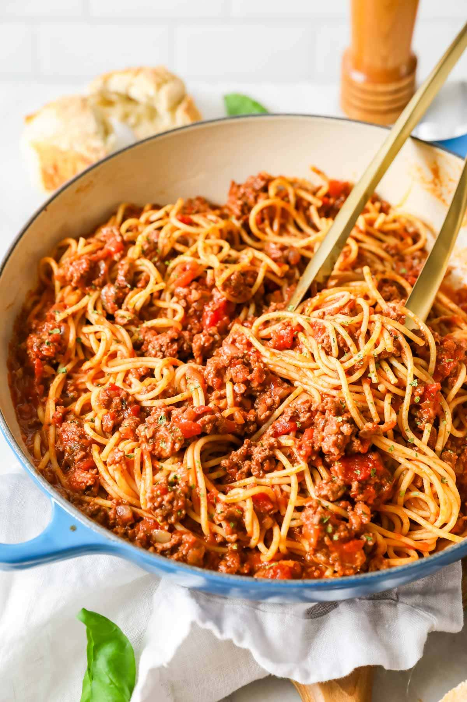

Spaghetti and Meat Sauce

Description
A good old spaghetti and meat sauce will always be a classic. If you are into a healthier lifestyle,
this is a very flexible recipe and you can adjust the ingredients of this recipe according to your needs!
In this recipe, I will show you how I would like to make mine.
Ingredients
To create this spaghetti and meat sauce dish, all you need is the following:
- 16 oz of lean ground beef of your choice
- Your choice of tomato pasta sauce
- 3 pieces of garlic cloves, diced
- Spaghetti of your choice
- 3 roma tomato, diced
- Half an onion, diced
- Black pepper
- Olive oil
- Salt
Steps
- Boil water and put in one handful of spaghetti for 12 minutes. Adjust the amount of time
the spaghetti in pot to achieve your desire spaghetti texture.
- Dice onion and garlic. Heat up a pan with oil and throw in the diced items.
- When you see the golden brown color starting to appear on the onion,
throw in the ground beef.
- Add a pinch of black pepper and salt mid way thru and cook the beef
to the desired doneness.
- Oil up a new pan, add diced roma tomato and 1 teaspoon of sugar.
- Once the tomato turn soft in the pan, add 12 ounces of pasta sauce and cook until everything in
the pan is properly heated up
- Mix the food from both pans together in a dish and finish plating.
- Enjoy!